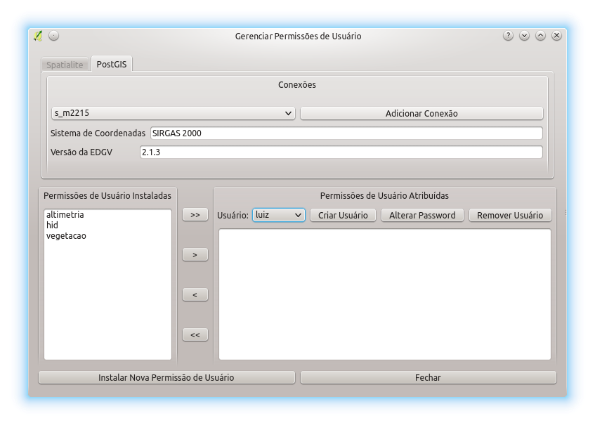
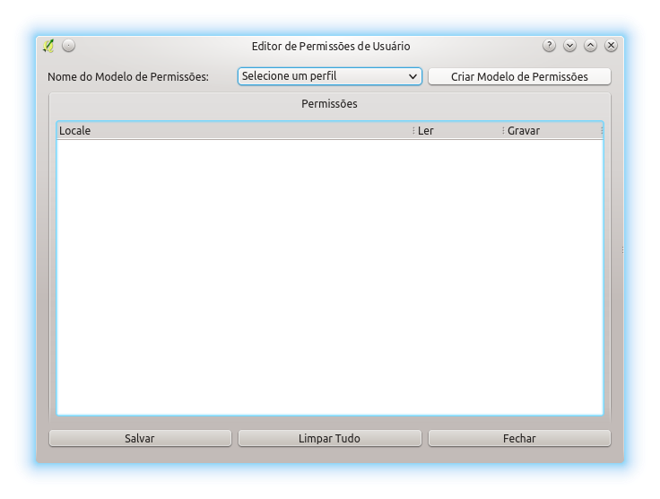
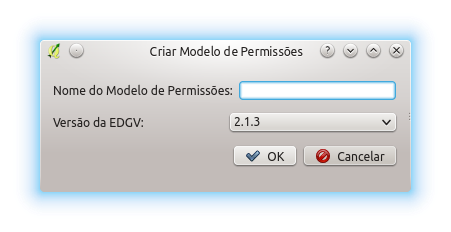
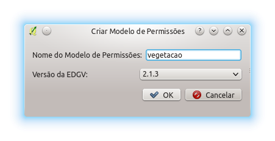
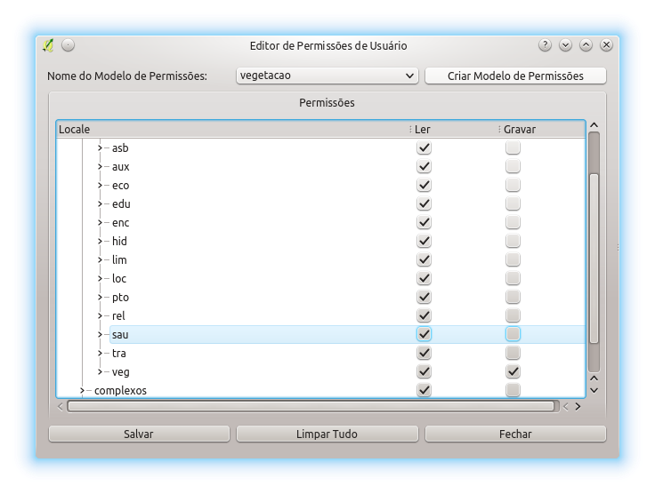
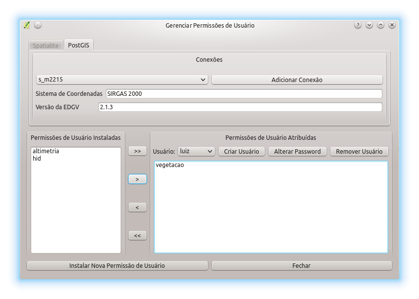

O DSGTools permite que sejam criadas permissões para os usuários. Essas permissões definem como o usuário terá acesso aos bancos de dados criados pelo DSGTools. A permissões só funcionam em bancos PostGIS.
Inicialmente deve ser selecionado o banco de dados que será configurado. Caso o banco não esteja na lista pode-se efetuar a adição do banco pelo botão Adicionar Conexão.
Com a seleção do banco feita deve se selecionar um Usuário já criado no banco. Caso o usuário ainda não exista é possível criar com o uso do Botão Criar usuário como se pode ver na figura a seguir.

Com os dados preechidos é só clicar em Criar Usuário e esperar a mensagem de retorno. É possível definir também se o usuário que está sendo criado será ou não superusuário clicando em Supersuário. É possível também alterar o password com o botão Alterar Password e é possível remover o usuário selecionado com o botão Remover Usuário. Agora resta selecionar o usuário recém criado.

Com o usuário selecionado é possível ver as permissões já existentes no banco selecionado no campo Permissões de Usuário Instaladas. Caso a permissão desejada não esteja lá, é possível clicar em Instalar Nova Permissão de Usuário. A janela de resultado pode ser vista na figura a seguir.

Nesta janela é possível ver os modelos de permissões criados na máquina do usuário no campo Modelos de Permissões de Usuário Existentes. Elas podem ser instaladas no banco, para tanto, devem ser selecionadas e posteriormente deve se clicar no botão Instalar. Caso se queria, é possível apagar do computador um modelo de permissão clicando no botão Remover. As Permissões de Usuário instaladas podem ser vistas no campo Permissões de Usuário Instaladas. Caso se deseje remover algumas permissões deve-se selecionar as mesmas e clicar no botão Remover Perfil.
Caso não existam os Modelos de Permissões necessários é possível confeccionar eles através do botão Abrir Editor de Permissões de Usuário. O resultado pode se ver na figura a seguir.

Para se criar um modelo de permissôes deve se clicar no botão Criar Modelo de Permissões. Na janela mostrada a seguir deve se definir o nome do modelo de permissões.

Com o nome definido deve se clicar em Ok.

Agora resta ao usuário selecionar o modelo criado e editar o mesmo marcando para cada nível as permissões Ler e Gravar conforme a necessidade. Posteriormente é só clicar em Salvar para finalizar a criação.

Com o modelo de permissões criado e instalado no banco de dados é possível se fazer a atribuição dessas permissões a um usuário selecionado. Suponhamos que o usuário criado seja "luiz", ao se fazer a seleção dele é possível ver as Permissões de Usuário instaladas no banco e as permissões que ele possui. Para se instalar um conjunto de permissões nova deve se selecionar uma (ou mais) permissões e clicar em >>, >, <, << para, respectivamente, atribuir todas as permissões, atribuir somente uma, remover uma e remover todas as permissões previamente atribuídas.
Supondo a instalação das permissões de vegetação (onde é possível ver todo o banco mas somente editar a categaoria vegetação) teríamos o resultado como se pode ver na figura abaixo.

Desta forma as permissões do usuário "luiz" foram definidas.